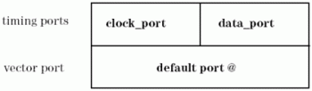

Setting Up a Continuous Clock with the KEEP_PLL_ALIVE Feature
The ASCII interface supports the creation of multi-port setups. Thus, you can define a setup for a continuous clock as described in Creating a Multi-Port Timing with ait. If clock pins and data pins must belong to different vector ports, then this is the only way to realize a continuous clock. In many situations, however, it will be sufficient to distinguish between data pins and clock pins on the timing side and use the default port @ for the vectors, as illustrated in the following figure.

In this special case the ASCII interface can generate the required setup automatically to a large extent.
The input information required for this feature is mainly contained in a special section of the ASCII timing file, which is identified by the KEEP_PLL_ALIVE keyword. Besides, the clock and data ports must be defined in the pin configuration file. No further coding effort is required. In particular, clock port and data port need not be specified at all in the global configuration file (*.aic); their names are passed to aitin the KEEP_PLL_ALIVE section.